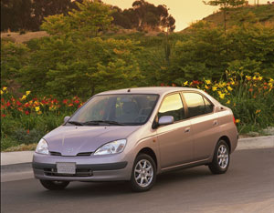
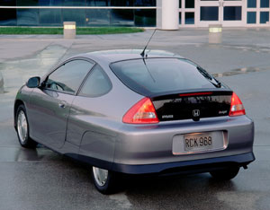

The new generation of electric hybrid cars - Toyota’s Prius and the Honda Insight - have come a long way from the days of plug-ins. Hybrids combine the the traditional gas-powered engine with an electric-powered motor to conserve energy and reduce pollution. By combining the two energy sources into a single system, the Prius and Insight have all the pep and power of traditionally powered cars, but with benefits to both the environment and pocketbook.
The only unusual aspect of the Toyota Prius is the wait involved in getting the car: about four months at Crown Toyota in Lawrence, Kan., typical for the country. Toyota’s success is rooted in its canny ability to balance what American consumers want (energy and price benefits) with what they fear (most anything different). Toyota broke into the American market by using that formula in the post-’70s energy-crisis market. The Prius is a relatively spacious, four-door sedan, comparable to a Camry, with enough space in the trunk for groceries or luggage. An interior touch-screen display monitors the hybrid system, speed and overall gas mileage. The four-passenger Prius gets 45 miles per gallon on the highway - better than most comparable gas vehicles, but not breathtaking. Where the Prius shines is in stop-and-go city traffic. Because the gas engine doesn’t kick in until the car reaches an acceleration point the electric motor can’t handle, and the innovative braking system recharges the battery, the Prius averages 52 mpg in the city.
If great gas mileage is your primary concern, the two-passenger Honda Insight might be for you. Using a gas-assisted electric system similar to the Prius, the Insight averages 61 mpg in the city and 68 on the highway. The Insight’s light weight gives it such efficiency - you can easily move the whole car with one hand. Interior and trunk space is limited, because of the car’s compact size and space allocated to the batteries.
Both cars are relatively nonpolluting. The Insight is rated ULEV (Ultra Low Emission Vehicle) and the Prius SULEV (Super Ultra Low Emission Vehicle), the two best ratings for emissions.
These cars aren’t for everyone. Neither will pull a horse trailer or boat, and the Prius’ city adaptations may mean it doesn’t pay off as well for rural drivers. The two-seat Insight is impractical for families.
If you’re interested, now is a good time to buy. Looking to capitalize on American concerns about gas prices and energy efficiency, Toyota and Honda are offering good inducements. Both manufacturers’ warranties include complete coverage for three years. All hybrid-related components in the Prius are under warranty for eight years, and similar components in the Insight are covered for 10 years. The Prius has a suggested manufacturer’s list price of $19,995, and the smaller Insight lists at $20,180.
These incentives might not last forever, particularly if Prius and Insight owners start spreading the word about how unexotic the cars actually are. Right now, Americans are looking the other way: One out of four new vehicles is a sports-utility vehicle. But then, gas-guzzling land-yachts were the rule when Toyota and Honda first introduced models like the Camry and Accord - now two of the best-selling cars in America.
|
 PHOTO: TOYOTA The 2001 Toyota Prius averages 52 mpg in the city and 45 mpg on the highway. |
 HONDA The 2001 Honda Insight averages 61 mpg in the city and 68 on the highway. |
|